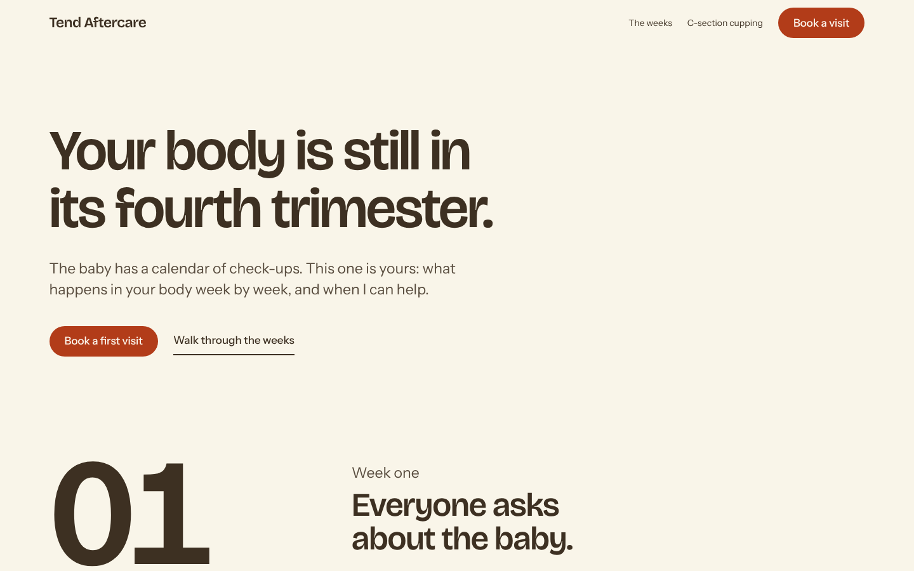
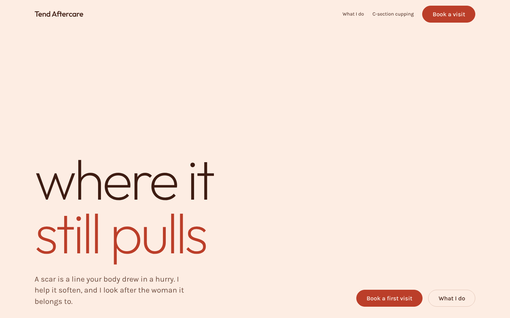
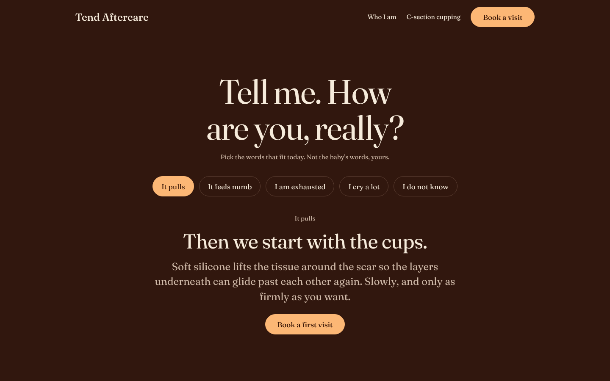

Three directions, three different ideas
Not three colour schemes this time. Each one is built on a different idea about what the page is for, so they are laid out, written and read differently. All three are warm, all three keep you at the centre, and every picture is still an empty spot marked with what belongs in it.
-

A. The fourth trimester
The page is the time after birth. Week one, week two, week six, week twelve, and any week after that.
The page warms as the weeks pass, and a big week number follows you down.
-

B. Where it pulls
A scar is a line your body drew in a hurry. The page is built on that line, and on the words women actually use.
One line runs through the whole page, tight at the top and soft by the end.
-

C. Tell me
A first visit does not begin with a price list. It begins with someone asking how you are.
She picks the words that fit, and the page answers in your voice.